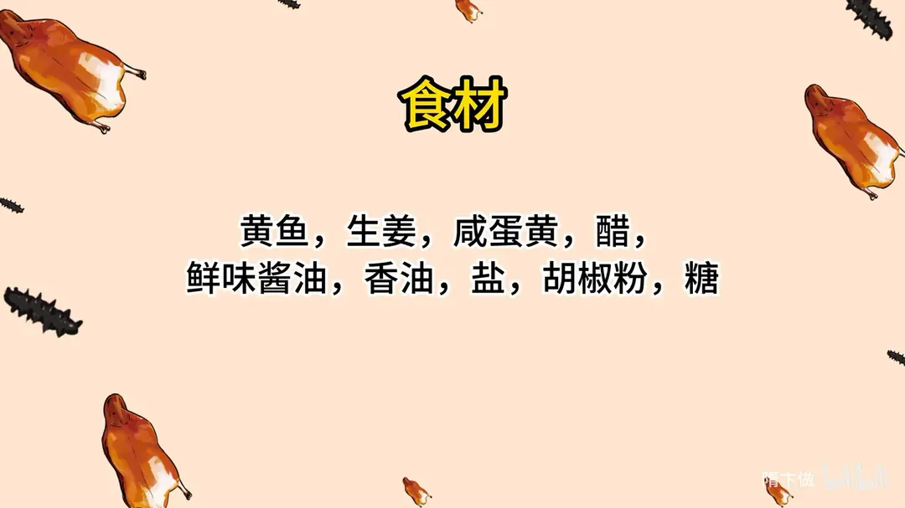
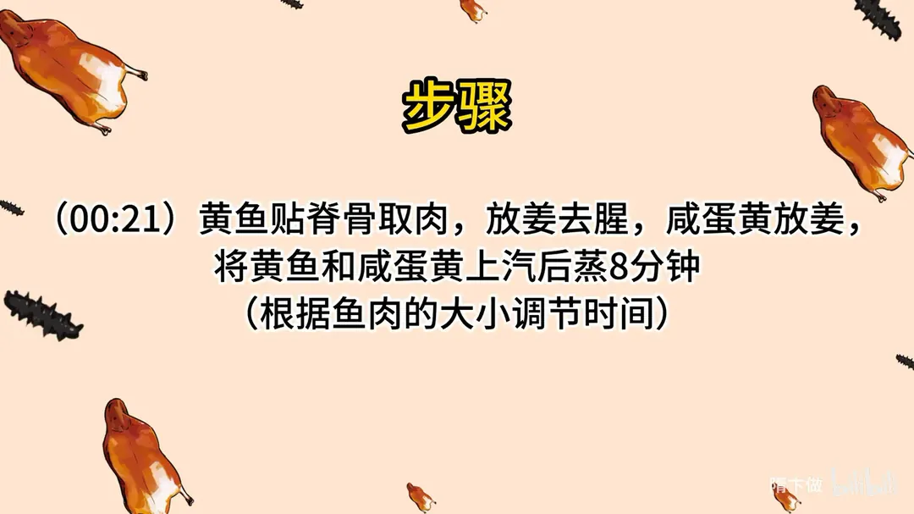
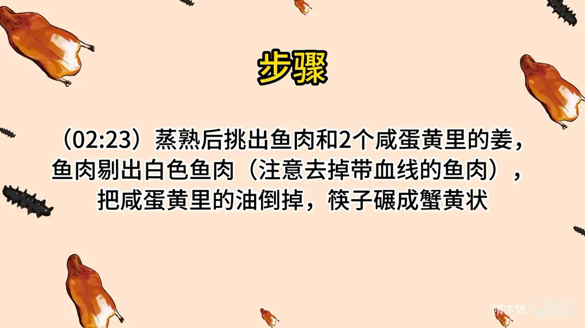
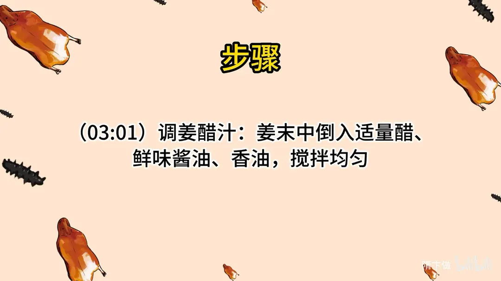
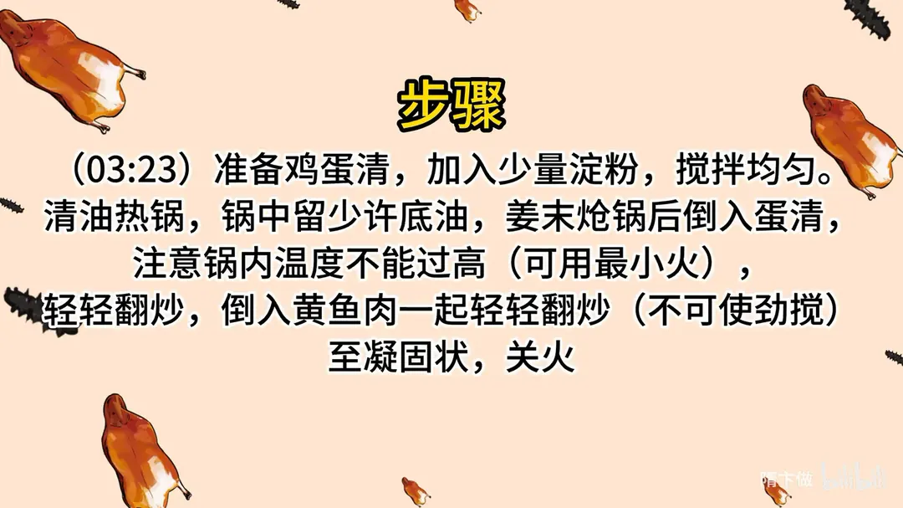
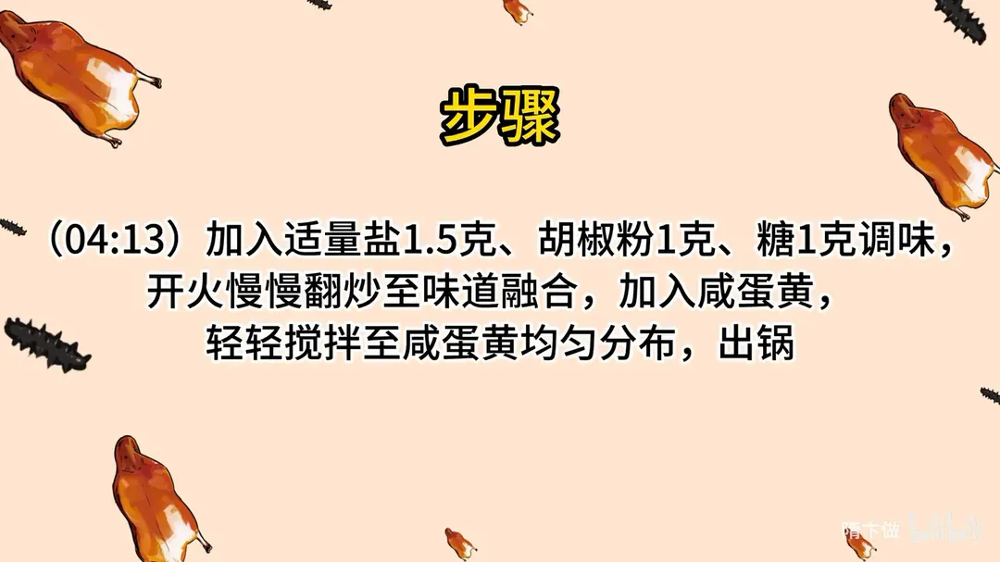

赛螃蟹
隋卞一做。黄鱼贴脊骨取肉，与 2 个咸蛋黄一起上汽蒸 8 分钟；鱼肉只取白色部分，咸蛋黄倒掉油、碾成蟹黄状。蛋清加少量淀粉，最小火配姜末轻炒至凝固，再用 1.5g 盐、1g 胡椒粉、1g 糖调味，最后拌入咸蛋黄。
原视频：https://www.bilibili.com/video/BV126ZiYeEjZ
食材
黄鱼、咸蛋黄、生姜 等 11 样
| 类别 | 用料 | 用量 |
|---|---|---|
| 主料 | 黄鱼 | 适量 |
| 主料 | 咸蛋黄 | 2 个 |
| 配料 | 生姜 | 适量 |
| 配料 | 鸡蛋清 | 适量 |
| 调料 | 淀粉 | 少量 |
| 调料 | 醋 | 适量 |
| 调料 | 鲜味酱油 | 适量 |
| 调料 | 香油 | 适量 |
| 调料 | 盐 | 1.5g |
| 调料 | 胡椒粉 | 1g |
| 调料 | 糖 | 1g |
步骤
- 蒸鱼与蛋黄：黄鱼贴脊骨取肉，放姜去腥；咸蛋黄也放姜，将黄鱼和咸蛋黄上汽后蒸 8 分钟，按鱼肉大小调节时间。
- 拆肉压黄：蒸熟后挑出鱼肉和 2 个咸蛋黄里的姜；鱼肉剔出白色鱼肉，注意去掉带血线的部分；咸蛋黄里的油倒掉，用筷子碾成蟹黄状。
- 调姜醋汁：姜末中倒入适量醋、鲜味酱油、香油，搅拌均匀。
- 炒蛋清：鸡蛋清加少量淀粉搅匀。清油热锅，锅中留少许底油，姜末炝锅后倒入蛋清，注意锅内温度不能过高，可用最小火；轻轻翻炒，倒入黄鱼肉一起轻轻翻炒，不可使劲搅，炒至凝固状关火。
- 调味出锅：加入 1.5g 盐、1g 胡椒粉、1g 糖调味，开火慢慢翻炒至味道融合，加入咸蛋黄，轻轻搅拌至均匀分布，出锅。
小贴士
- 鱼肉要挑掉带血线的部分，否则颜色发暗、腥味重。
- 咸蛋黄先倒掉油再碾，拌进菜里才不腻，颜色也更像蟹黄。
- 炒蛋清全程最小火、轻翻不搅，才能出蟹肉那种嫩瓣感。
讲解要点
难度：★★★★☆（难在贴脊骨拆鱼肉，以及蛋清小火慢炒的火候）
为什么这么做
- 用黄鱼不用别的鱼：黄鱼是海鱼，鲜味和口感最接近蟹腿，试过很多种鱼只有它最像。
- 鱼肉上必须放姜同蒸：姜去腥，蒸完鱼肉带一点姜香，吃起来更像螃蟹；不放姜真不行。
- 用咸蛋黄而不是鸡蛋黄，油还要倒掉：鸡蛋黄口感松软，和蟹黄差别很大；咸蛋黄蒸后先倒掉蒸出的腥油再碾碎，质地味道才像蟹黄蟹膏，拌进去也不腻。
- 只取白色鱼肉、剪掉带血线的部分：血线发黑发腥，留着会毁掉雪白的卖相和蟹肉感。
- 蛋清里加少量淀粉：淀粉锁住水分，炒的时候蛋清不出水，才能保持嫩瓣状。
- 姜醋汁一定要加鲜味酱油：光用醋酸得发冲（恶酸）不好接受，酱油提鲜压酸，这才是淮扬菜标准的姜醋汁。
- 全程最小火、轻翻不使劲搅：锅温一高蛋清立刻变色发糊、变老，像粤菜炒鲜奶那样慢慢推，才能出蟹肉瓣。
容易翻车
- 锅温太高下蛋清，蛋清马上变色、发糊发老，必须用最小火、只留少许底油。
- 炒的时候使劲搅，蛋清被打成碎渣，蟹肉瓣感全无；只能轻轻翻。
- 鱼肉没摸净小刺、没剔掉血线，吃着扎嘴、颜色发暗。
- 蒸的时间要按鱼肉大小调，肉小 5 分钟就够，蒸过头鱼肉发柴。
- 咸蛋黄油不倒就碾，成品油腻，也不像蟹黄。
原片尾卡






原片文案
AI 字幕校准稿
这个菜你们可能听过但是没见过，可能见过但是没吃过。今天教你们全网最像螃蟹的赛螃蟹。
赛螃蟹首先用黄鱼。黄鱼是海鱼，味道、口感真的很像螃蟹的蟹腿；我试过很多种鱼，只有黄鱼的口感是最像的。把头拔下来，然后贴着脊骨取肉，一定要注意安全。鱼骨和鱼头可以熬个汤，搁点白菜豆腐。把黄鱼上的胸骨刺片掉，蒸熟之后便于取肉，摸一摸刺去干净就行。
取好的两片鱼肉上面放姜——姜去腥，而且鱼肉上面放姜，蒸完之后吃着更像螃蟹的味道。一定要放姜，必须放姜。咸蛋黄也需要蒸一下。有的师傅会放鸡蛋黄，鸡蛋黄是那种松软的口感，跟蟹黄有很大的区别，所以这个咸蛋黄是最合适的。鱼肉和咸蛋黄一起上锅蒸，蒸 8 分钟就可以；蒸的时间根据鱼肉大小，鱼肉再小一点蒸 5 分钟也可以，只要把鱼肉蒸熟就行。
到时间了看一看，鱼肉相当的洁白。把上面的姜捡出来放到一边。鱼肉只选白的地方，拿筷子给它挑出来，中间带血线的地方要挑出去，雪白雪白的，很像蟹腿。这条鱼大约一斤半，一共就取出这么多肉。
然后咸鸭蛋黄，姜挑出去、油要倒掉。咸鸭蛋黄是模拟蟹黄的口感，拿筷子给它扒拉碎了；咸蛋黄搁姜蒸完了以后，味道很像蟹黄，一定得搁姜，不搁姜真不行。扒到跟蟹黄差不多就行了。
然后准备鸡蛋清。为了炒的时候不让蛋清出水，里边少放点淀粉，搅匀了，咱们就上火开始炒。
这是姜米。吃赛螃蟹肯定要配一个汁，就是姜醋汁：醋、鲜味酱油，然后来点香油，给它搅拌均匀就可以了。这一定要放点鲜味酱油，要单纯的醋的话，吃着好像有点恶酸恶酸的，不好接受。这个就是淮扬菜标准的姜醋汁。
上火来炒。炒螃蟹的锅一定是必须得干净，咱们把锅拿油润上，烧热油——这是纯净油，没有味道——锅里留少许底油。然后姜末炝下锅，把蛋清倒进去。这个时候锅里边温度不能太高，太高一是蛋清变颜色很容易糊，而且特别容易老；这个就像粤菜炒鲜奶似的，一定得慢慢炒，不着急。然后把这会儿把黄鱼肉倒进去，让它们混为一体。
锅烧热之后，在家就用最小的火就行了。这会儿进行调味：炒到开始不凝固了，先关火，下盐、胡椒粉、糖。一定是慢慢地翻，不能使劲搅。看下边出了点汤，出一点点，少勾一点淀粉。其实这个过程是为了教大家，我自己做可能就稍微快一点，不等出汤就做完了。开火，把所有味道炒融合之后，现在放蟹黄（咸蛋黄），轻轻一搅拌就可以了，这样可以出锅了。
吃的时候浇醋汁，先闻咸鲜的味儿，海鱼黄鱼的那种近似蟹棒的感觉。白嘴吃已经很接近蟹肉，还带一点点螃蟹特有的鲜气。黄鱼的鲜和口感跟蟹肉特别像，咸蛋黄正好模拟了蟹膏里边那种油脂的部分，吃着香；整体搭配起来，像在阳澄湖里游泳。评分 85 靠上。黄鱼肉再舍得多放点，那就更香了。做起来也不是太难，你们在家只要把火候掌握好了、多放点鱼肉、配上醋汁，没问题。